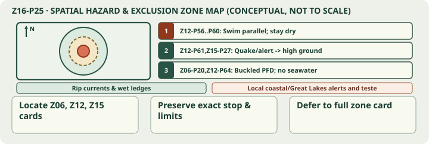

Z16-P25 · Field reference atlas · New manuscript
Coastal, Great Lakes Surf, Tsunami and Maritime Survival Index
Locate the original encyclopedia cards for coastal, Great Lakes Surf, Tsunami and Maritime Survival Index.
When it applies · Offline reference lookup. The linked chapter defines the situation, audience and limits.
Equipment · Offline reader or the complete linked source cards in print.

Actions
- Open Z12-P56 for spot rip-current channels and escape by floating and swimming parallel to shore; Z12-P57 for respect sneaker waves, slippery wet kelp ledges and surging breakwater jetties.[A10, X14, X22]
- Open Z12-P60 for account for coastal salt spray, wind-driven sand, fog and rapid gear corrosion; Z12-P64 for interpret Small Craft Advisories, Gale Warnings and wind-against-tide wave steepening; Z12-P65 for stay with a swamped buoyant hull rather than attempting long cold-water swims.[A10, K04, X06, X02]
- Read the linked card’s applicability, equipment and stop conditions together. Keep review and source limitations attached to any excerpt.[A10, ED]
Failure recognition · Acting on a keyword or title while overlooking an upstream exception or stop condition.[A10, ED]
Verify · Confirm the exact page ID and read the full conditions before using the reference.[A10, ED]
Stop or change course · If the situation falls outside a linked card’s conditions or its stop rule applies, stop using this index as a decision aid. Follow the full card and current local directions.[A10, ED]
Evidence and editorial notes
- A10 · FEMA / Ready.gov · Make a Plan (current web edition)
- Section: Offline reader navigation, historical lineage, and HOLD transparency · Conditions: Using the complete 16-zone offline archive, zone readers, and print proofs
Support: Navigation aids expose draft status, reconstruction lineage, open diagnostic photo needs, and pending specialist holds on every lookup path.
Limitations: This index entry does not independently establish any safety, regulatory or diagnostic instruction. · Conflicting evidence: None noted.
Editorial note: Index design and cross-reference policy. Substantive directions come from linked upstream chapter claims. · Specialist reviewer: Accessibility, print QA, and editorial reviewer
Primary source · checked 2026-11-24 - K04 · USDA Forest Service · Handtools for Trail Work (0523-2810-MTDC) (agency handbook)
- Section: Sharpening, Filing and Handle Maintenance · Conditions: Maintaining cutting edges and wood tool handles in field or shop
Support: Secure the tool firmly before filing or honing, keep fingers behind file guards, preserve factory bevel geometry without overheating steel and replace loose or cracked handles rather than taping them.
Limitations: Field touch-up honing does not correct chipped, cracked or heat-annealed steel blades. · Conflicting evidence: None; separates routine edge maintenance from unsafe handle patching.
Editorial note: Guides sharpening, rust prevention and handle-failure retirement cards. · Specialist reviewer: Tool maintenance and forestry safety
Primary source · checked 2026-11-24 - X02 · Minnesota DNR · Cold Water Safety (current web edition)
- Section: Cold Water Safety > Cold Shock, Swim Failure and Hypothermia · Conditions: Immersion in water below 70°F (especially below 50°F / winter ice water)
Support: Cold shock can cause involuntary gasping and rapid breathing. Grip and swimming may deteriorate rapidly; flotation and early rescue matter. Onset and severity vary.
Limitations: Strong swimmers drown rapidly from cold shock and muscle incapacitation without flotation. · Conflicting evidence: Refutes myth that hypothermia is the only immediate cold-water killer.
Editorial note: Core physiological evidence for Z12 ice-breakthrough and maritime immersion cards. · Specialist reviewer: Cold-water rescue and wilderness medicine
Primary source · checked 2026-11-24 - X06 · NOAA NWS · Marine Weather Services (current web edition)
- Section: Marine Weather Services > Small Craft Advisories, Gale Warnings and Sea State · Conditions: Coastal, Great Lakes and open-water marine zones
Support: Marine forecasts issue Small Craft Advisories, Gale, Storm and Hazardous Seas Warnings; wind opposing tide or shallow shoals steepens breaking waves dramatically faster than inland forecasts indicate.
Limitations: Local fetch and headland funneling can exceed regional zone forecasts. · Conflicting evidence: None; integrates with NOAA-NWR marine channels.
Editorial note: Guides marine weather thresholds and coastal-craft abort cards in Z12. · Specialist reviewer: Marine meteorology and maritime safety
Primary source · checked 2026-11-24 - X14 · NWS · Rip Current Safety (current web edition)
- Section: How to escape a rip current · Conditions: Caught in a rip current on a surf beach
Support: Do not fight the current. Float or tread water and signal for help. Swim out across the flow only if able and conditions permit.
Limitations: The current, shoreline, flotation and ability vary. A universal escape direction and visual diagnosis are unsafe. · Conflicting evidence: See A02 claim audit for boundaries.
Editorial note: Core coastal surf and Great Lakes rip-current card evidence. · Specialist reviewer: Coastal rescue and water safety
Primary source · checked 2026-11-24 - X22 · NWS · Sneaker Waves (Current web edition)
- Section: Why sneaker waves are dangerous and beach precautions · Conditions: Coast exposed to breaking swell and mobile logs
Support: A higher wave can follow a quiet interval and reach beyond prior waves. Stay back and heed local warnings.
Limitations: No fixed number of waves or minutes establishes safety. · Conflicting evidence: See A01 cross-zone review.
Editorial note: Use only within the stated conditions. · Specialist reviewer: Coastal safety
Primary source · checked 2026-11-24
Source lineage · New manuscript (Z16 P20 hazard index) · Classification · New manuscript.